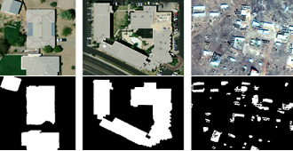
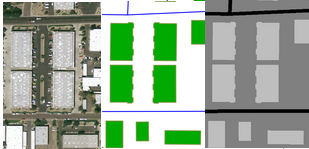
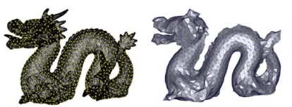
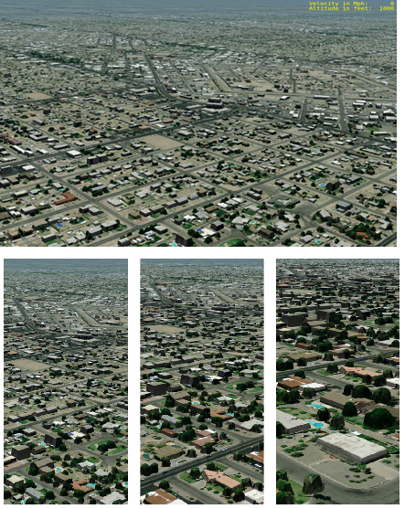

Er LI

I am an assistant researcher in Institute of Automation, Chinese Academy of Sciences.
I work on the research and development of robust, real-time solutions for real-world computer graphics and computer vision problems, leveraging all aspects of geometrical design, machine learning, probabilistic models, and discrete and continuous optimization.
From 2013 to 2014, I was a Postdoctoral researcher with the Department of Engineering and Computing Systems, Arizona State University, Phoenix, AZ, USA , where I workded with Prof. Peter Wonka and Dr. John Femiani. Before that, I was a Postdoctoral Researcher with the Institute of Software, Chinese Academy of Sciences from 2012 to 2013.
I received a PhD in computer science from the National Laboratory of Pattern Recognition (NLPR) at the Institute of Automation of the Chinese Academy of Sciences（CAS), where I was advised by Prof.Xiaopeng Zhang. I received my B.S. degree in Automation from Wuhan University, Wuhan, China, in 2007.
Publications
Journal
-
 Robust Rooftop Extraction from Visible Band Images Using Higher Order CRF
Robust Rooftop Extraction from Visible Band Images Using Higher Order CRF
Er LI, John Femiani, Shibiao Xu, Xiaopeng Zhang, Peter Wonka.
IEEE Transactions on Geoscience and Remote Sensing, 2015.
[PDF] - 
Shadow Based Rooftop Segmentation in Visible Band Images
John Femiani, Er LI, Anshuman Razdan, Peter Wonka.
IEEE Journal of Selected Topics in Applied Earth Observations and Remote Sensing, 2015.
[PDF] - 
Graph cuts to combine multiple sources for feature extraction
John Femiani, Er LI.
IMAGE, 2014.
[PDF] - 
Sampling and surface reconstruction of large scale point cloud
Er LI, Xiaopeng Zhang, Yanyun Chen.
VRCAI, 2014.
[PDF] -
 Symmetry Based Chinese Ancient Architecture Reconstruction from Incomplete Point Cloud
Symmetry Based Chinese Ancient Architecture Reconstruction from Incomplete Point Cloud
Er LI, Xiaopeng Zhang, Yanyun Chen.
ICDH, 2014.
[PDF] -

Illustrating the disassembly of 3D models
Jianwei Guo, Dong-Ming Yan, Er LI, Weiming Dong, Peter Wonka.
Computers & Graphics, 2013.
[PDF]
{kind=link}
{kind=link}
{kind=link}
Projects
- 
Geo-specific Displacement Maps for Real Time, Stereoscopic Training Simulation
The goal of this project is developing a largely automated pipeline that goes from refined source as input to a run-time visualization of feature rich terrains as the output. The pipeline begins with an application that consumes multiple types of input data to generate raster files that contain both height and feature information. One of the goals of this application is to support a wide variety of input data types. At a minimum, these include out-the-window imagery, material classified data, road vector data, and digital surface model data derived from stereo pair imagery and/or LIDAR data. Different pieces of knowledge about the features on the terrain are gained from each type of data. The last application in the pipeline is a run-time application that uses displacement map data and an innovative rendering technique to display geo-specific high-complexity terrain surface regions in a virtual environment that is similar to those in aircraft simulators.
{kind=link}